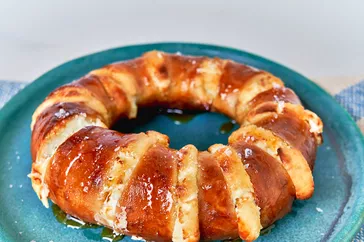

Hot Honey Butter Cream Cheese Stuffed Bagel

This hot honey butter cream cheese stuffed bagel is a twist on the viral
air fryer stuffed bagel, with tangy cream cheese inside and a hot
honey-caramelized outside.
Ingredients
- 1 bagel
- 1 ounce cream cheese, cut into 8 slices
- 1 tablespoon hot honey or regular honey, plus more for drizzle
- 1 tablespoon butter
Steps
- Gather all ingredients.
-
Preheat an air fryer to 390 degrees F (199 degrees C) according to
manufacturer's instructions.
-
Make 8 small cuts in the bagel, taking care not to cut all the way
through, to create small openings. Add a piece of cream cheese in each
crevice around the bagel. Combine honey and melted butter in a small
dish and coat the stuffed bagel liberally. Sprinkle with salt.
-
Place bagel in the air fryer until golden brown, 5 to 7 minutes. Drizzle
with more honey if desired.